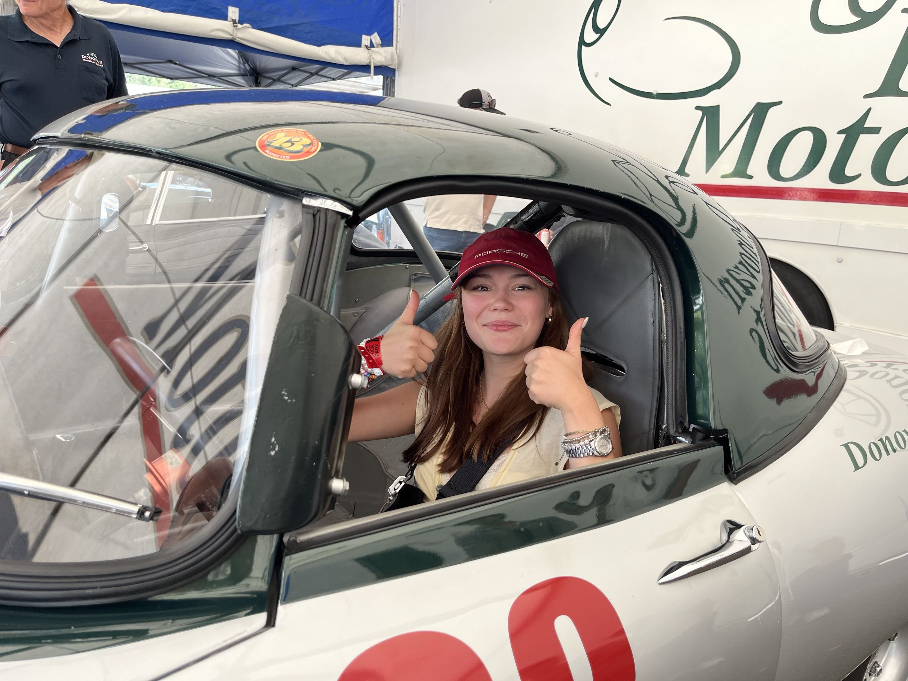

About
I am a New York City based design and technology student who enjoys building thoughtful digital experiences.
I am a senior in Design and Technology at Parsons School of Design, where I focus on the creative technology pathway. I grew up between engineering and design perspectives, with an electrical engineer father and a designer mother, and that mix still shapes how I approach projects.
Working on vintage cars with my father taught me patience and practical problem solving. Figure skating taught me discipline and consistency, especially when improving through repetition. Both experiences carry directly into how I design and iterate.
My strongest interests are web design, branding, and product thinking. I like taking complex ideas and turning them into interfaces people can understand quickly.

Core Focus Areas
Resume
Lily Rose Vosari
Norwalk, CT | 203-919-0514 | lilyvosari@gmail.com | lilyrose1013.github.io/LilyVosari_Portfolio/HomePage/index.html
Education
The New School: Parsons School of Design - New York, NY
Bachelor of Fine Arts, Design and Technology - Expected May 2027
Concentration: UI/UX Design | Senior Year
Relevant Coursework: Core Studio Systems, Core Studio Environments, Core Studio Objects, Critical Computation Lab, Core Lab Systems
Experience
Skating Coach | November 2019 - Present
Stamford Twin Rinks, Darien Ice House, Rising Stars Hockey - Stamford & Darien, CT
- Teach structured one-on-one and group lessons to children, young adults, and adults across varying skill levels, developing individualized curricula for each student.
- Establish short- and long-term performance goals with students, tracking progress and adjusting approach based on ongoing feedback.
- Manage groups of 15-20+ skaters simultaneously, coordinating safe and productive sessions through planning and clear communication.
- Research and adapt instructional techniques to meet the needs of a diverse range of learners, including children with different learning styles.
Volunteer | September 2019 - Present
Darien Community Association - Darien, CT
- Support programming and events for a youth-focused nonprofit that directs proceeds toward local educational initiatives.
- Collaborate across teams with shifting roles and responsibilities, contributing to both planning and execution.
Projects
Interactive Hardware Games - Arduino / Physical Computing | 2025-2026
- Designed and built two fully playable arcade-style games using Arduino Mega, TFT displays, and HC-SR04 ultrasonic sensors, managing the full process from concept to working prototype.
- Diagnosed and resolved hardware and software conflicts across display drivers, wiring configurations, and library integrations to produce stable, responsive user interactions.
Community Sustainable Energy - Sustainable Systems | 2023
- Researched sustainable energy infrastructure in New York City, investigating existing systems and identifying gaps in community-level energy access and distribution.
- Produced a theoretical design diagram for a community-based sustainable energy network, mapping potential implementation across residential and public spaces.
- Created a short theoretical video exploring water scarcity as an interconnected environmental concern, contextualizing energy sustainability within broader resource systems.
Portfolio Website - lilyrose1013.github.io/LilyVosari_Portfolio | Ongoing
- Designed and built a personal portfolio site using HTML and CSS to document creative and technical work across UI/UX, physical computing, and research.
Skills & Interests
Technical: Figma, Adobe Creative Cloud, JavaScript, Python, CSS, C#, Unity, Blender, Canva
Language: English (native), Estonian (fluent), Finnish (fluent), French (conversational)
Interests: Figure skating (15 years, US Figure Skating), immersive and sensory experience design, classic literature, psychology of human interaction